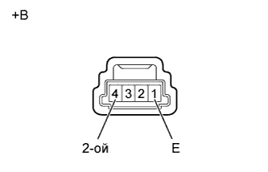
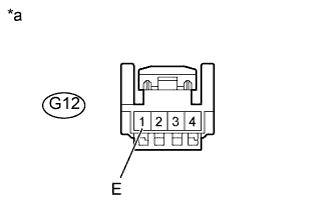
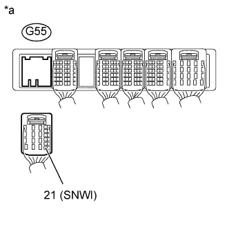

СИСТЕМА АВТОМАТИЧЕСКОЙ ТРАНСМИССИИ (для моделей с двигателем 1GR-FE) > Цепь 2-го режима запуска переключателя выбора режима |
| 1.ПРОВЕРЬТЕ ПЕРЕКЛЮЧАТЕЛЬ ВЫБОРА РЕЖИМА (2ND) В СБОРЕ |
|  |
Снимите переключатель выбора режима (2ND) в сборе (Нажмите здесь).
Измерьте сопротивление в соответствии со значениями, приведенными в таблице ниже.
| Контакты для подключения диагностического прибора | Положение переключателя | Заданные условия |
| 1 (E) - 4 (2ND) | Переключатель выбора режима (2ND) нажат | Менее 1 Ом |
| 1 (E) - 4 (2ND) | Переключатель выбора режима (2ND) не нажат | 10 кОм или более |
| *a | Устройство с неподсоединенным жгутом проводов (переключатель выбора режима (2ND) в сборе) |
|
| ||||
| OK | |
| 2.ПРОВЕРЬТЕ ЖГУТ ПРОВОДОВ И РАЗЪЕМ (ПЕРЕКЛЮЧАТЕЛЬ ВЫБОРА РЕЖИМА (2ND) – МАССА) |
|  |
Отсоедините разъем G12 переключателя выбора режима (2ND).
Измерьте сопротивление в соответствии со значениями, приведенными в таблице ниже.
| Контакты для подключения диагностического прибора | Условие | Заданные условия |
| G12-1 (E) - масса | Всегда | Менее 1 Ом |
| *a | Вид спереди разъема со стороны жгута проводов: (переключатель выбора режима (2ND) в сборе) |
|
| ||||
| OK | |
| 3.ПРОВЕРЬТЕ ЖГУТ ПРОВОДОВ И РАЗЪЕМ (ПЕРЕКЛЮЧАТЕЛЬ ВЫБОРА РЕЖИМА (2ND) – ECM) |
|  |
Отсоедините разъем G55 ЕСМ.
Измерьте сопротивление в соответствии со значениями, приведенными в таблице ниже.
| Контакты для подключения диагностического прибора | Положение переключателя | Заданные условия |
| G55-21 (SNWI) - масса | Переключатель выбора режима (2ND) нажат | Менее 1 Ом |
| G55-21 (SNWI) - масса | Переключатель выбора режима (2ND) не нажат | 10 кОм или более |
| *a | Вид сзади разъема со стороны жгута проводов (к ECM) |
|
| ||||
| OK | ||
| ||